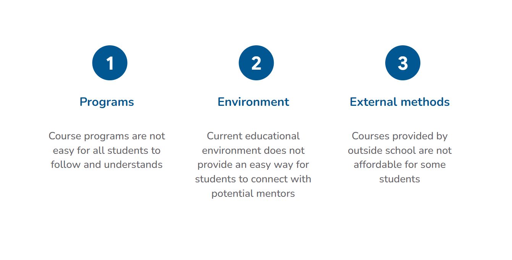
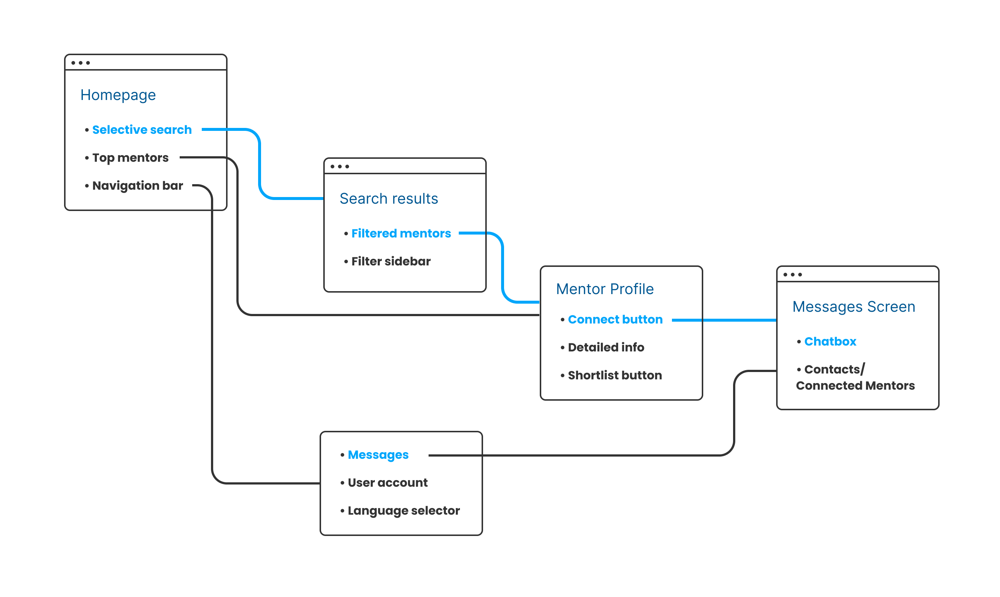
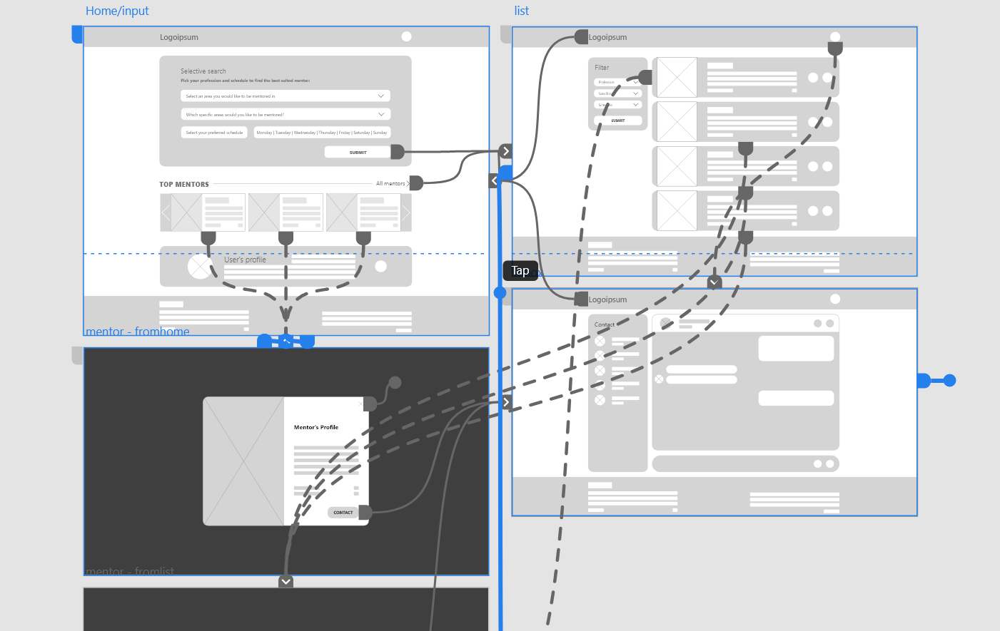
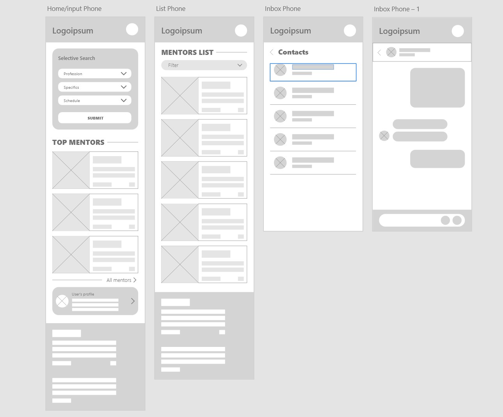

CASE STUDY: Hi Mentor
A web based mentor requesting solution for university students
ROLE: UX Designer
DURATION: Dec 2022 - Jan 2023
PROJECT GOAL: Design a web based tool for university students to easily find volunteer mentors to help them with their studies.
TARGET AUDIENCE: University students
CHALLENGE: 60% of participants had trouble with their time studying in class and 85% of participants said that they would be very interested if there could be a way to find mentors for overtime studies.
1. Research and Empathize
To start the empathize process, I conducted surveys and interviews among university students to get a clear picture on the current educational environment and learn more about their problems with getting assistance in studying.

Datas from the survey showed that 60% of participants had trouble with their time studying in class and 85% of participants said that they would be very interested if there could be a way to find mentors for overtime studies.
It was clear at this point that there is a market for a mentor finding tool, and diving deep into the stories that I've been told during the interviews sessions could lead to a lot of potential design solutions
Pain Points
Meet the Users
Problem Statement
Jacob is a University Student who needs a quick and easy way to find volunteered mentors to help him with his studies because he can not study effectively in class and there are no viable alternative.
2. Initial Ideas and Designs
Initial Concept and Layout Sketches
Moving on from the empathize and define stages with sufficient datas and understandings, I went into the ideating stage, exploring different concepts and web layouts.


Sitemap
Low-fi Wireframes and Prototype
With all the basic layouts sketched out on paper, I moved on to Adobe XD to create digital wireframes and low-fidelity prototype to prepare for the first round of user testing by usability study.
 Try it out here: Low-fi Prototype
User Testing
With the first prototype ready to be tested, I planned and
conducted a moderated usability study session with volunteer
students from the previous interviewsas participant users.
The main goal of the study is observe how well users interact
with the designed prototype and make further improvements to the
final designs based on the results.
Most of the feedbacks were very positive, and there were also a
lot of interesting points for improvements that the participants
pointed out. After some analyzing, I finalized the study datas
into these following insights:
- Users want to be able to
save a list of mentors while browsing.
- Users want a
“Select All” button for the
schedule in the filter section.
- Users want
more way to contact mentors.
3. Final Design


Try it out here: Final Prototype
TAKEAWAYS
IMPACT: Our users from the interviews and usability studies are impressed with our design and are very eager for the finalized product to be launched.
WHAT I LEARNED: By taking this project, I learned how simple solutions can have such a huge impact in resolving recurring problems in people’s everyday-life. I also learned how important little details are in making up the whole user experience.

Next steps
- Conduct another usability studies after the product is
finished with development to see how it goes in actual
working conditions.
- Conduct research and plan the design for other forms of
connection and a mentor review system.
- Research
video conferencing for real-time mentoring
session.